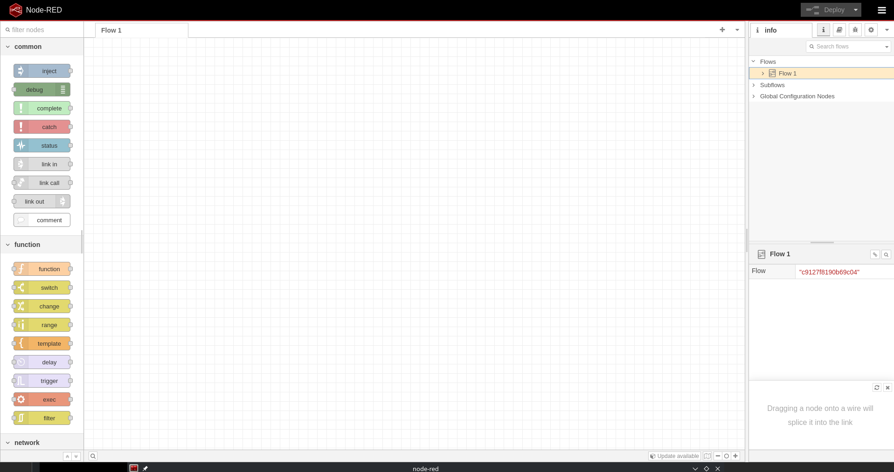
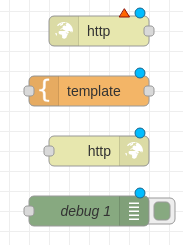
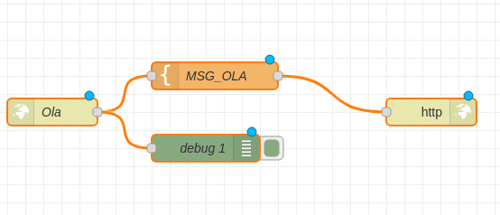
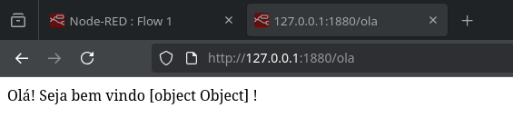

Node-Red
Antes de explorarmos protocolos como HTTP, MQTT e WebSocket em nossos projetos IoT, é importante conhecer uma ferramenta poderosa que facilita a criação e integração dessas soluções: o Node-RED. Trata-se de um ambiente de programação visual baseado em fluxos, desenvolvido para simplificar a conexão entre dispositivos, APIs e serviços online.
No Node-RED, você monta seus sistemas arrastando e conectando blocos chamados “nós”, que representam ações ou dispositivos, eliminando boa parte da complexidade de se programar linha a linha. Essa abordagem torna o desenvolvimento mais acessível e intuitivo, principalmente para quem trabalha com IoT, automação e sistemas embarcados.
Com ele, é possível rapidamente criar servidores web, clientes MQTT, interfaces websocket e integrar sensores e atuadores em uma rede sem grandes dificuldades técnicas. Podem ser feitas rotinas para receber dados, processá-los, armazená-los e interagir com diferentes protocolos e dispositivos — tudo em um ambiente unificado e com visualização clara do fluxo de dados.
Nosso objetivo ao utilizar o Node-RED é conectar os conceitos de eletrônica, sistemas embarcados e comunicação de rede que vimos até agora, com uma ferramenta prática que acelera a prototipagem e o desenvolvimento de soluções IoT e aplicações inteligentes.
A partir daqui, conheceremos os principais nós e fluxos que permitem a criação de APIs web simples, clientes e servidores MQTT e WebSocket, ampliando as possibilidades para construir sistemas completos e funcionais
Anatomia de um “Fluxo”
Para dominar a ferramenta, é preciso entender os três pilares que compõem sua interface:
Nós (Nodes): São os blocos de construção básicos. Cada nó executa uma função específica — desde ouvir uma requisição HTTP até realizar um cálculo matemático complexo.
Fluxos (Flows): Representam a lógica do sistema. Ao conectar a saída de um nó à entrada de outro, você define o caminho que a informação percorrerá.
Mensagens (msg): O objeto que viaja entre os nós. Geralmente formatado como um objeto JSON, ele contém o msg.payload, que carrega o dado principal (como a leitura de um sensor).
Node-Red Hello World
Caso você ainda não tenha olhado para a cara do Node-red, abaixo podemos ver como é a interface dele assim que abrimos um novo projeto.

À esquerda estão os nós que podemos utilizar, ao centro nossa área de trabalho e à direita as configurações do fluxo.
Para começar pegue os nós http in, template, http response e debug:

Agora selecionando os nós coseguimos configurar cada um, para isso dê um duplo clique.
Configure o http in da seguinte forma:
- Method: GET
- URL: /ola
- Name: Ola
Configure o template:
- Name: MSG_OLA
- Property: msg.payload
- Template:
Olá!
Seja Bem vindo !
Agora conecte o http in Ola na entrada do debug e da template MSG_OLA,
e por fim a saida da templatena entrada do http response

Agora podemos clicar no botão Deploy no canto superior direito, se tudo
estiver certo você verá a mensagem “Successfully deployed”.
Agora podemos tentar acessa o endpoint /ola que acabamos de configurar
